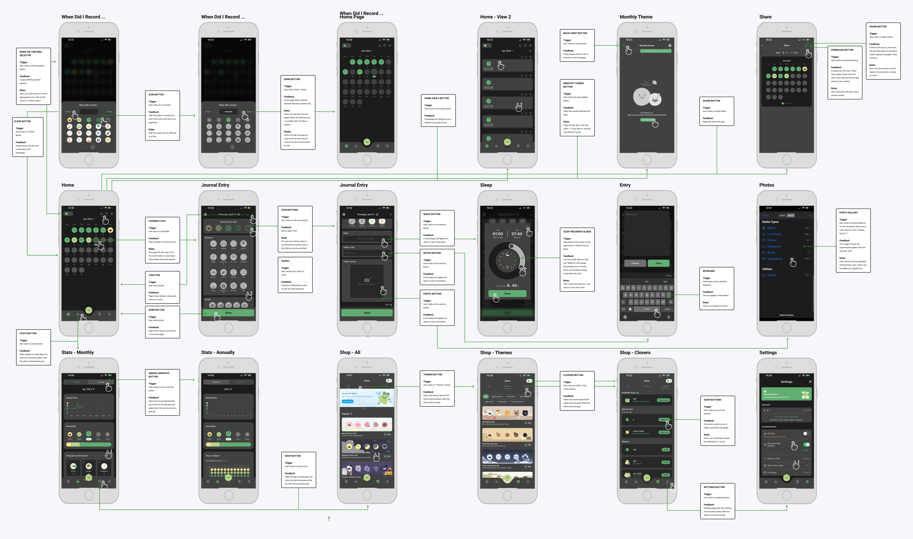
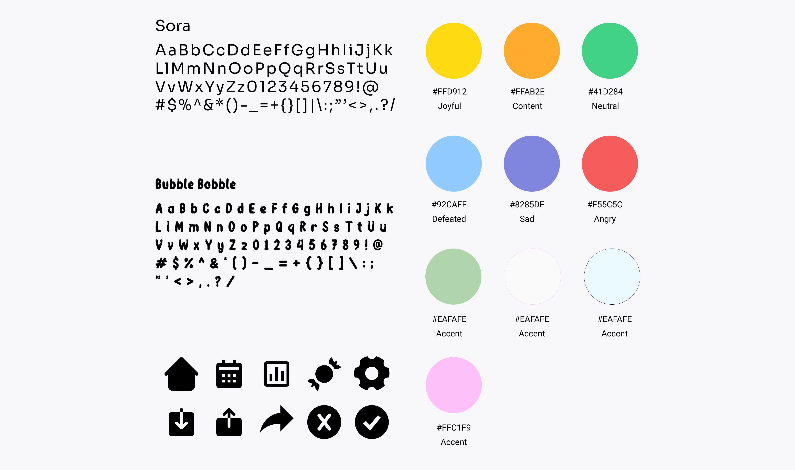
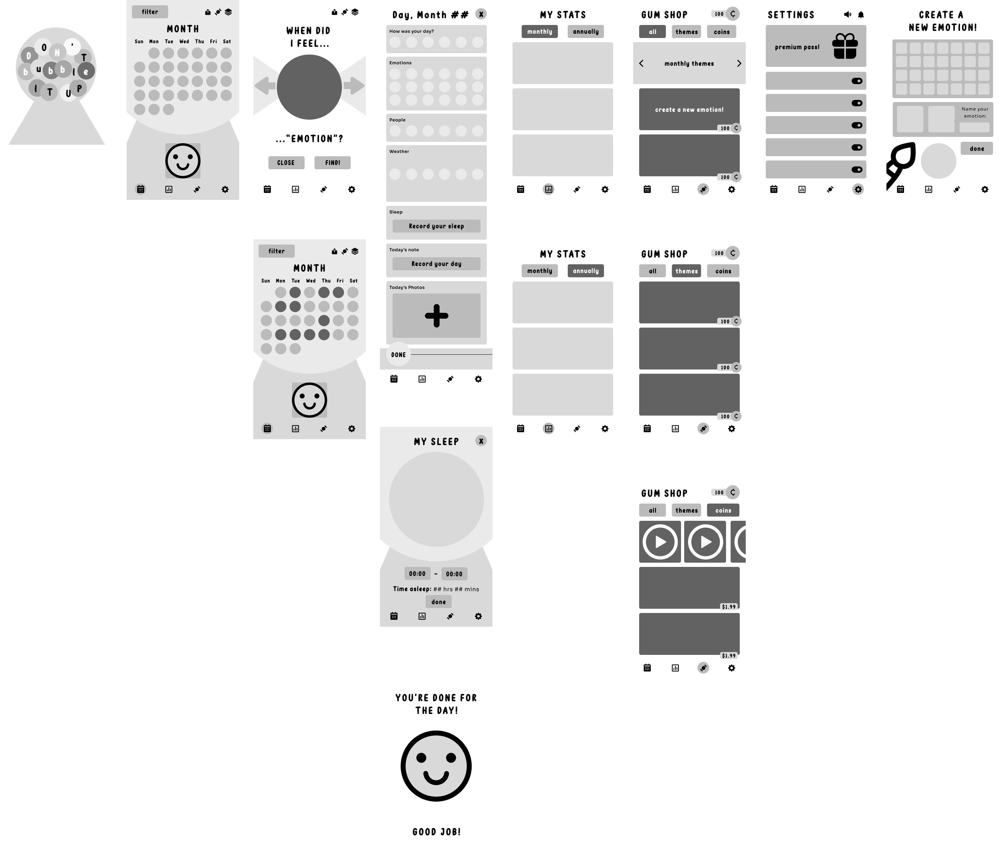
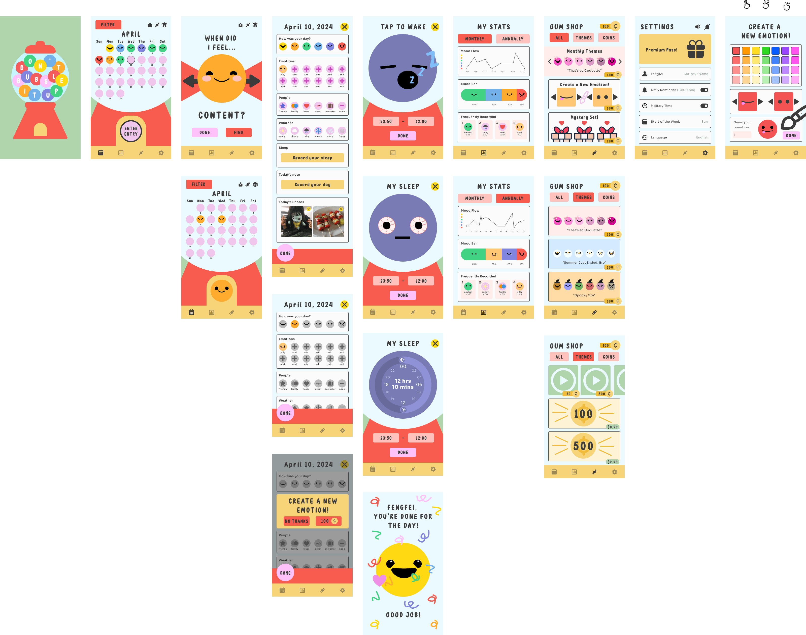
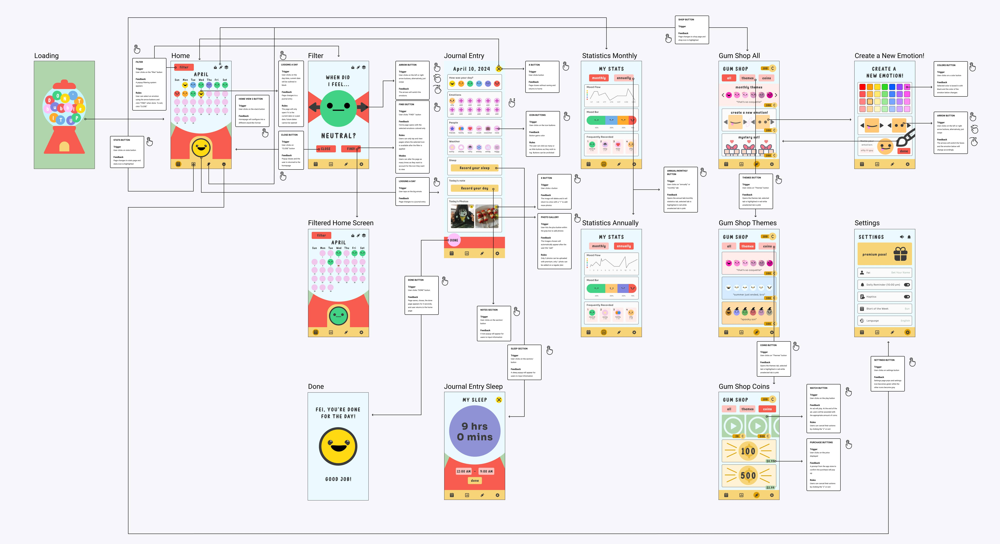
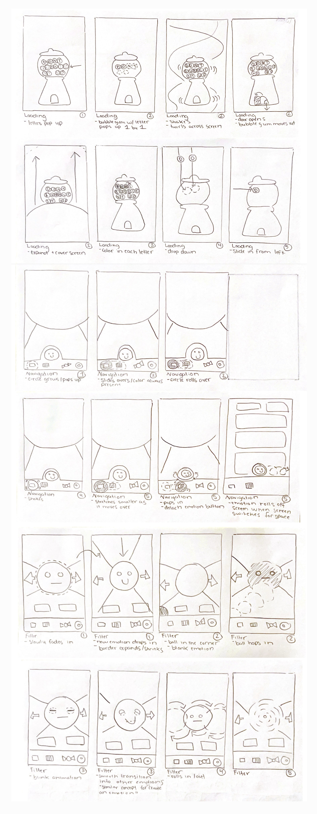
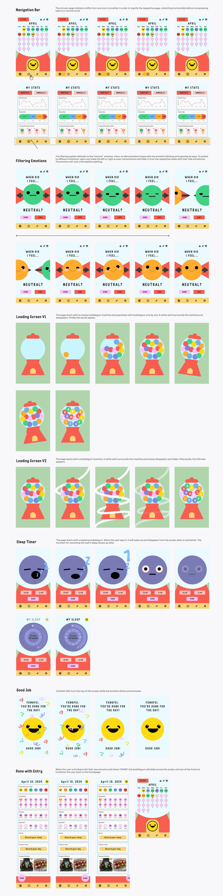

The Overview
Date: Apr. 2024 - June 2024
Roles: UX/UI/IX Designer / Animator / Mobile App Designer
Tools: Figma, Figma Plugins (Motion and Jitter), CuteCut Pro
This project is a redesign and rebrand of DailyBean, a mobile journaling app that enables users to log their emotions, weather, and activities using a variety of interactive buttons. Users can also interact with their journal entries by adding text and images, providing a simple, noncommittal way to reflect on their experiences. While the original app was centered around a green color scheme, my redesign introduces a vibrant color palette that symbolizes the depth and range of human emotions, using color psychology to pair colors with specific emotions. Key goals of this redesign included prioritizing personalization and fun by offering new, free, and accessible features through in-app currency, replacing restrictive paywalls. I also focused on enhancing microinteractions to provide meaningful feedback, adding an element of excitement to the user experience.
Context and Challenge
Background
DailyBean is a mood tracking journaling app. It allows users to log their emotions, weather, and activities using a variety of interactive buttons. It includes both free and paid functions, but the paid function greatly limits the functionality of the app. The original app was centered around a green color scheme, which I wanted to change to a vibrant palette that symbolizes the depth and range of human emotions. I also wanted to get rid of the restrictions because journaling and self reflection should be accessible to all.
Timeline
The project was structured with weekly milestones, spanning a total of ten weeks. Each week included a different focus on the project, such as creating a task flow, app flow, wireframe, wireflow, etc.
Challenge
The challenge is being able to find a way to uniquely brand the app as my own design. This challenged me to think outside of the box and try out new layouts for the app's pages.
Goals and Objectives
- Create a more vibrant and playful color scheme
- Add more customization features
- Incorporate thoughtful microinteractions that can bring moments of joy
- Overcome the paywall with more in-app currency
Process and Insight
The process can be divided into 2. The first part was analyzing the original app. The second part is creating a new and rebranded app that addresses the goals of the project.
The Original App
Original App's Task Flow and App Flow
This task and app flow show a user logging their day by using the buttons for emotions, weather, and more. It also displays a user navigating to the calendar, store, menu, and statistics.
The Rebranded App
Styles
I rebranded the app to feel more playful and expressive by playing with bright colors and bubbly fonts. I implemented filled-in iconography to maintain a bold look.
Sketches and Ideation
These sketches were my earliest designs. At the end, the project diverged from these iterations.

Wireframe
In the redesign, I kept most of the organization from the original app, as they already had a clean interface. The app flow and task flow remains the same mostly, except the addition of the "Create a New Emotion" and new in-app currency system and functions.
High Fidelity UI
Here, the colors are applied to the gray scaled wireframe.
IX Flow
This IX Flow shows the user going through similar processes within the original app. The user can navigate through the calendar, store, menu, and statistics tab. Additionally, there are interactive features such as the "Create a New Emotion" page that the user can navigate to.
Microinteraction Sketches and Interaction Guides
The initial sketches for the microinteractions and animations for the loading page, navigation bar, and emotion filter diverged in the interaction guides, as new ideas were adopted in that phase.
 The Results
Overall, I learned a lot within Figma. Throughout this process I had to tackle technicalities such as working with components and their variants, which I quickly appreciated because of how it streamlined my work process. Outside of the technical work, I was also able to become more conscious of my designs and how little things such as a microinteraction can have such a huge impact on a user. This project has made me pay more attention to miniscule details, and it has challenged me to embrace thinking outside of the box while also grounding me with the rules of accessibility.